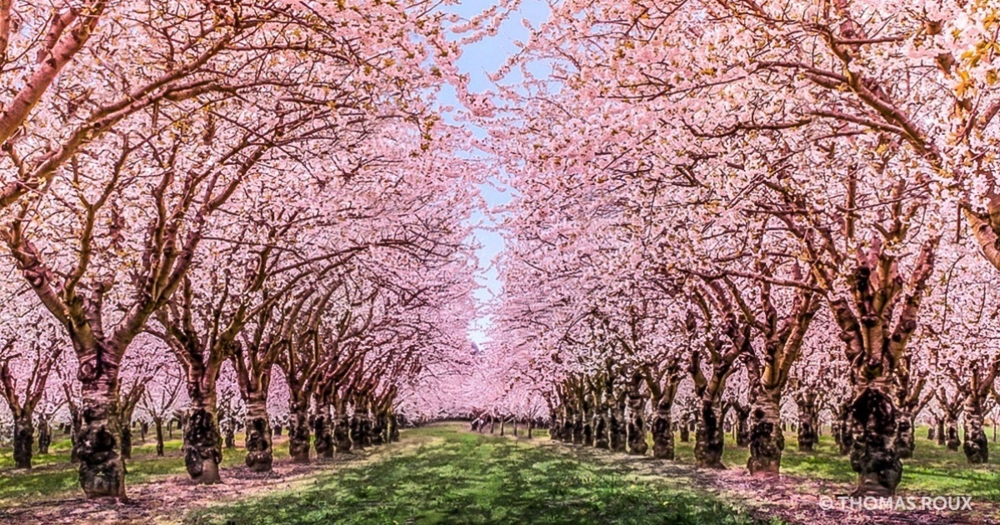

Весна

Жылжыды уакыт. Туды күн
Жыл кұсы, көктем оралар.
Бу шалып түннің түндігін,
Қар басын қағып қар алар:
Күтеді қыз бен жігіттер
Гүл бағын жазғы қаланың,
Күтеді күнді жер көктер,
Көк мақпал кешін даланың,
Көктем! - деп шығып қария
Тосады жонын шуаққа,
Балаға бейне дария
Кайығы қалқыр су ақса.
Есіткен жоқпын, бірақ та,
Әуезді әнін бұлбұлдың,-
Сыйысып әлі тұр мартқа
Төрт мезгілі бір жылдың.
Тастаса сілкіп мұздағын
Жамбылдың алма бақтары,
Жойған жоқ аяз ызғарын
Алтайдың мамық ақ қары.
Зима
Весна
Лето
Осень